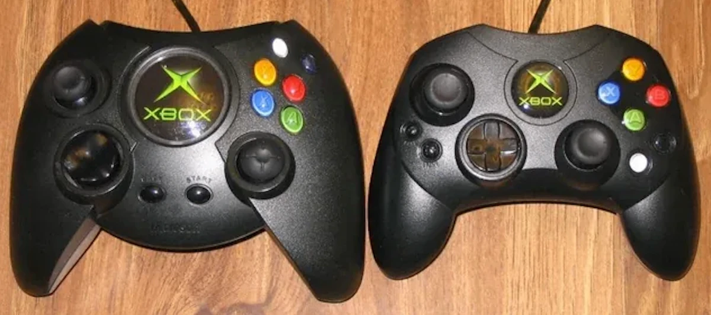
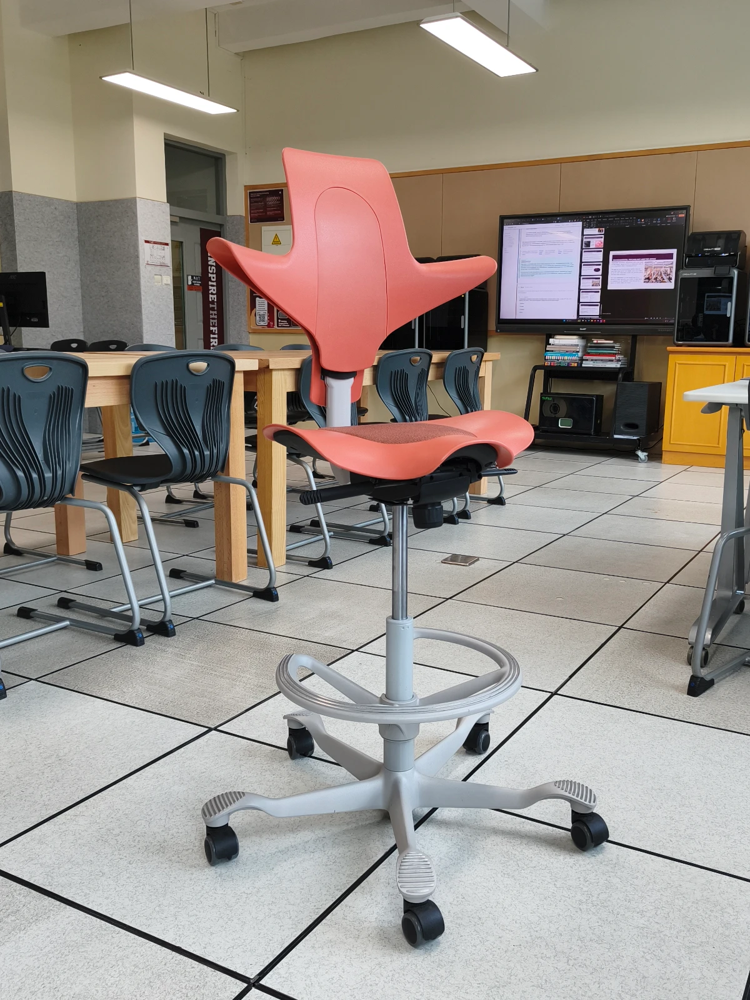
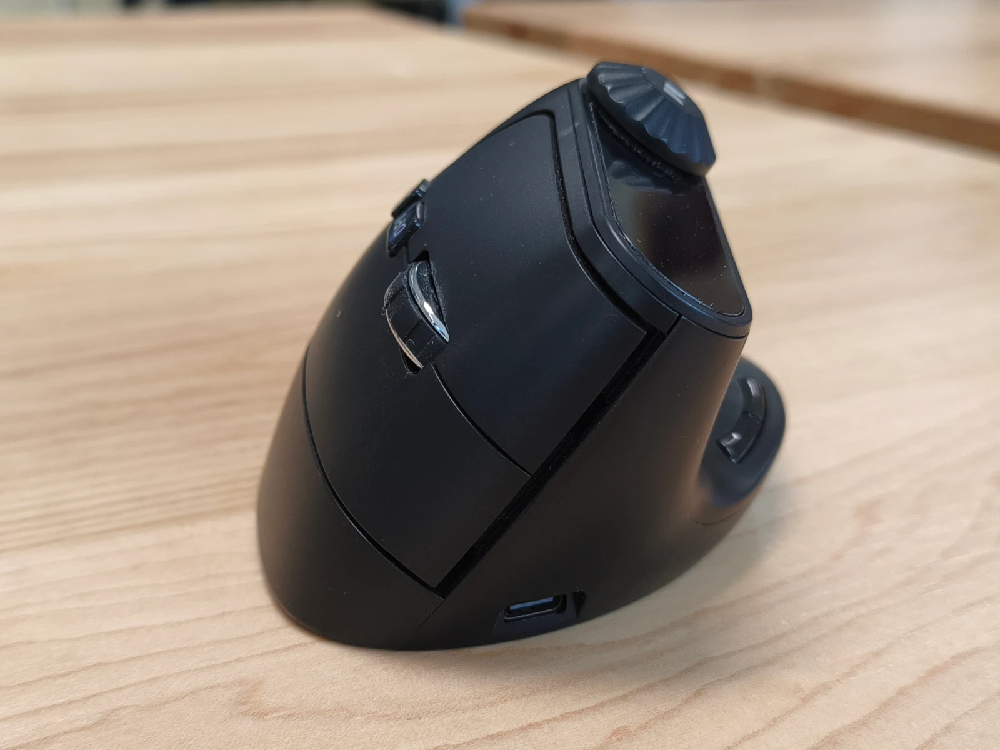
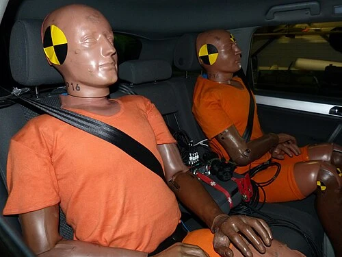
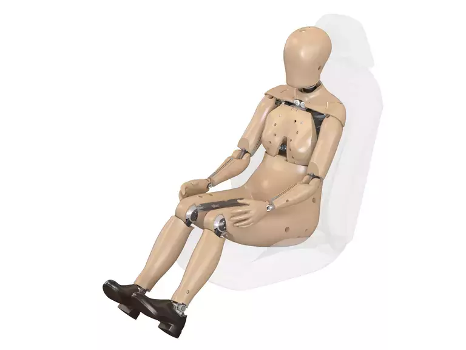
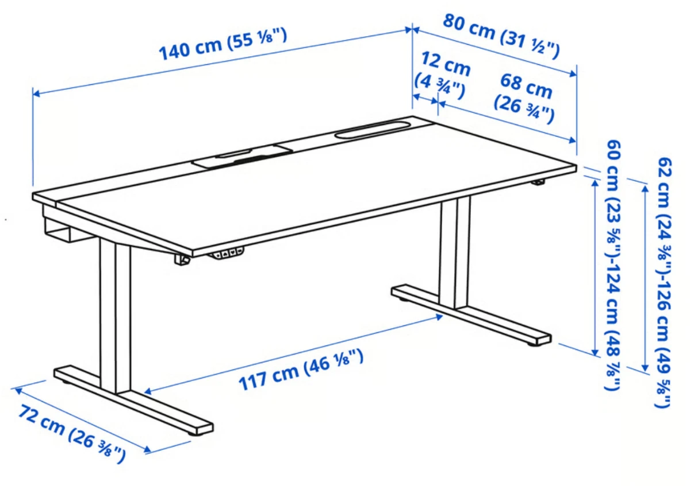
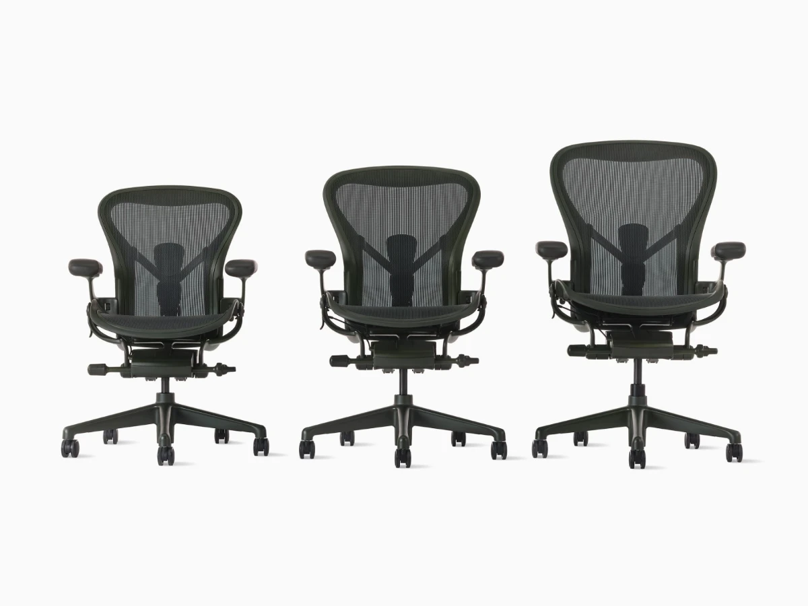
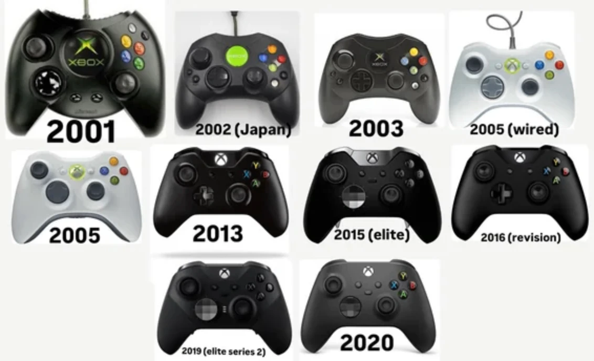
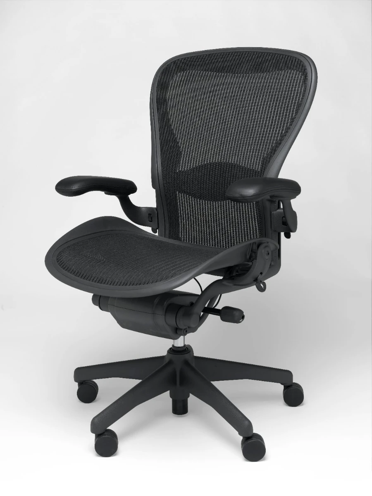
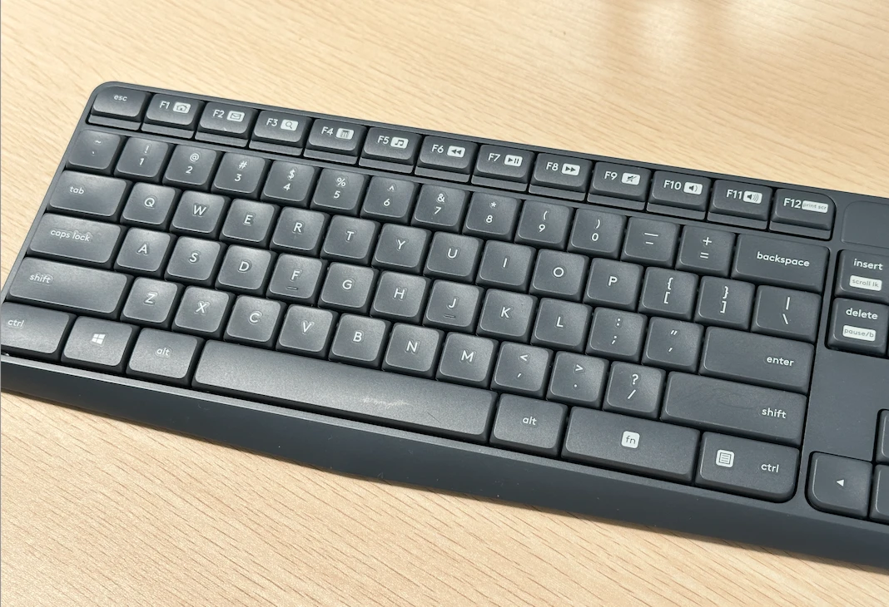

Xbox Controller Redesign
Built for one hand size, then rebuilt for everyone else.
Read spotlight →| Guiding question | Whose body is a product designed around, and who does that choice leave out? |
|---|---|
| Absorbs | A1.1.1 to A1.1.6 (ergonomics, anthropometrics, percentiles, adjustability, work envelopes, physiology); C1.2.1 to C1.2.3 (inclusive design, the limits of designing for the average, design for extremes) |
| Taught once | Percentiles and the case against the 50th percentile (A1.1.3, A1.1.5, C1.2.2). Disability and physiological limits as one discussion (A1.1.2, A1.1.6, C1.2.1). Design for extremes, moved here from the "method of extremes" box on the B1.1 page (B1.1.2, C1.2.3). |
| Value | SL 11 marks (13.8 %), yield 1.2; HL 5 marks. Inclusion 5 at SL, 4 at HL. Feeds IA criterion B (specifications with measurable dimensions). |
(SL, 9 hours)
C1.2 is ergonomics with a values argument attached. Teaching inclusive design straight after percentiles means "design for extremes" arrives as the answer to the problem the percentile lesson raises, which is the order a student needs it in.
Ergonomics is the first topic in the course for a reason. Every object you have ever used was built around an assumption about a body. Once you can name those assumptions, you start seeing them everywhere. The door you have to shove with your shoulder, the shelf you cannot reach without a stool, the phone that needs two hands when your last one needed only one: none of that is bad luck. Somebody chose a dimension, and in doing so somebody decided whose body it would fit.
What makes this topic useful, and not just interesting, is that it gives you evidence. Anthropometric data and percentiles let you argue that a handle is too small or a control is out of reach without saying "it feels wrong to me". That is exactly what examiners want in Paper 2, and exactly what your IA needs when you justify a measurement.
Ergonomics also carries real weight. The crash test dummy case in 1.1.3 shows that deciding whose body counts as "standard" has consequences well beyond comfort. Take the percentile logic seriously now, because it comes back in C1.2 Inclusive Design and anywhere else you have to defend a measurement.
Inclusive design starts from a claim that sounds obvious and turns out to be radical: disability is not a property of a person, it is a mismatch between a person and an environment somebody designed. A building with stairs and no ramp does not accommodate a wheelchair user badly. It excludes them, and it does so because of decisions that could have gone another way at little cost had anyone thought about it early enough.
The practical case is easy to make and worth making. Curb cuts were fought for by wheelchair users and are now used by anyone with a suitcase, a pram or a delivery trolley. Captions were built for deaf viewers and are now switched on in half the world's living rooms. Designing for the edges of a user population tends to improve the product for the middle, which is why "design for extremes" appears here as a strategy rather than an act of charity. Pay particular attention to objective 1.2.2, which admits that inclusive design is not always possible. Being able to say clearly where the limits are and why is a far more sophisticated answer than insisting everything can be made universal. This topic also connects tightly back to the percentile and physiology work in A1.1.
Students must be able toDescribe how ergonomics is used to improve the design of a product by making a design more efficient, usable, functional, effective and safe.
Ergonomics (also called human factors engineering) is the study of how people interact with the products, systems and environments they use. When designers apply ergonomic thinking, the result is products that are safer, more comfortable and more efficient to use.
The field is built on three interlocking disciplines:
A product designed without ergonomic consideration may still function technically. It will be harder to use, more tiring, riskier or inaccessible to some users. Good ergonomic design removes that mismatch.
A practical way to apply ergonomics is to evaluate a design against the five qualities the IB syllabus identifies. Each describes a different way a product can fail to match the person using it:
| Quality | What it means | Applied example |
|---|---|---|
| Efficient | Reduces the effort, time or resources a user needs to complete a task | A chair adjusted so the user's elbows rest at desk height, eliminating shoulder elevation during typing |
| Usable | The product can be operated successfully by the target user population without specialist knowledge | Touchscreen buttons sized to at least 44 × 44 px so different finger sizes can tap accurately |
| Functional | The product performs its purpose without causing harm or requiring workarounds | A handle diameter chosen to fit the grip range of the target users so they can apply the required torque |
| Effective | The user achieves accurate and complete results when using the product | A warning label that uses both colour and symbol, so users with colour vision deficiency still receive the message |
| Safe | Reduces the risk of injury or harm during intended and foreseeable use | A machine guard preventing accidental contact with rotating parts during normal operation |
Ergonomics applied: six product categories
The five qualities above are abstract until you see them in a real object. The categories below are the ones the course uses most often, and each one solves a different kind of body-to-product mismatch.


The paragraph on disability under "Factors that change the data" also relates to row 5.
Students must be able toExplain and use static and dynamic anthropometric data to design for different people and be able to discuss how factors such as age, gender, ethnicity and disability affect the anthropometric data.
Anthropometric data is the systematic collection of human body measurements - height, reach, grip diameter, shoulder width, eye height and hundreds of other dimensions. Designers use this data to set critical product dimensions.
The World Health Organisation, in its report Physical status: the use and interpretation of anthropometry (1995), calls anthropometry "the single most universally applicable, inexpensive and non-invasive method available to assess the size, proportions, and composition of the human body". Non-invasive means nothing enters the body: you are measuring a person from the outside, with a tape or a caliper, not with a scan or a blood test. That is why the method is used everywhere from hospitals to furniture factories.
Two types of data are collected:
How the data is collected, and why it is not perfect
Measurements are taken with instruments such as calipers (a sliding measuring tool with two arms that close onto the body), tape measures, height gauges and, increasingly, 3D body scanners. Whatever the instrument, two things matter: it must be sturdy, and it must be calibrated, meaning it has been checked against a known standard so its readings can be trusted.
Some measurements are far more reliable than others. Height and weight are simple and repeatable. Body fat measured with skinfold calipers is much less reliable across a large sample, because the result depends on exactly where and how hard the technician pinches the skin. When you use a data table, it is worth asking how the numbers in it were obtained.
There is one convention that surprises most students. Anthropometric data is meant to describe the nude body, so that measurements from different studies can be compared. In practice, cultural expectations often make that impossible, so investigators measure clothed subjects and then subtract an allowance for the type and thickness of the clothing worn. Designers sometimes have to add an allowance back on, since a user wearing a winter coat or protective equipment occupies more space than the table says.
Factors that change the data
No two bodies are identical. A person tall enough to fit clothing size L may have arms that fit a size S. Designing for a single "standard human" always excludes real users. Anthropometric data must account for variation across:
Using anthropometric data in practice
A designer identifies which body dimension is critical for the product (seat height, grip width, overhead reach distance), selects the data table for the relevant user population, then determines which end of the distribution to design for. Whether the dimension is about reach or clearance controls the choice of percentile. The rules for that are covered in 1.1.3 Percentiles and 1.1.5 Work Envelopes.
Students must be able toIdentify where the 5th, 50th and 5th–95th percentiles are appropriate for a design scenario.
Anthropometric data for any dimension - such as standing height - follows a normal distribution (also called a Gaussian distribution, or a bell curve). Most people cluster near the middle; fewer people are at the extremes. Percentiles tell you what percentage of the measured population falls at or below a given measurement. Someone in the 70th percentile for a dimension measures the same as, or more than, 70% of the sample.
The statistics behind the curve
A normal distribution is described by just two numbers. The mean is the average value, which sits at the peak of the curve. The standard deviation (written with the Greek letter sigma, σ) measures how spread out the values are around that mean. A small standard deviation gives a tall, narrow curve, meaning most people are close to average. A large one gives a wide, flat curve.
The useful part is that the spread is predictable:
This is why percentile tables work at all. Because the shape of the curve is known, a designer can convert "I want to include 90% of users" into two actual measurements in millimetres, taken from the table at the 5th and 95th percentiles.
A second useful piece of arithmetic concerns mixed populations. Within a single gender, the 5th to 95th percentile range covers 90% of people, because 5% are excluded at each end. In a mixed group that is half male and half female, the same range covers about 95% of people. Only the tallest 5% of men and the smallest 5% of women fall outside it, and since each group is half the sample, that is 2.5% + 2.5% = 5% excluded in total.
Three percentiles are used routinely in design:
Most products should be designed for the 5th–95th percentile range, covering 90% of the population. The extreme 5% at each end are excluded - a deliberate design compromise when the cost of accommodating them is too high.
Designing for the mean alone looks sensible but usually is not. Very few people sit exactly at the average, so a fixed dimension set at the 50th percentile fits almost nobody properly. The problem gets worse when the user group crosses age or gender boundaries, because there is no single average that describes both halves of the group.
Case study: the crash test dummy
Crash test dummies are the clearest example of a 50th percentile decision with consequences. The timeline below is worth knowing in detail, because it shows how long a bad assumption can survive once it is built into testing equipment.


Because female anthropometric data was not collected or used for decades, safety features were effectively optimised for a male body, and studies later showed women were significantly more likely to be injured in crashes. The case illustrates the real harm that follows when designers fail to represent the full range of users in their data.
A second example shows the same principle without the tragedy. Computer furniture for primary school children has to cover a very wide 5th to 95th percentile range, across both genders and across several years of rapid growth. Get it right and the furniture encourages good posture, reduces fatigue and prevents long-term back problems. Get it wrong, and a child spends six years at a desk that does not fit them.
A useful heuristic when selecting a percentile: ask whether the dimension involves a person reaching towards something or fitting into something.
| Design concern | Percentile to use | Reasoning |
|---|---|---|
| Reach: how far a control or object is from the user | 5th percentile | If the person with the shortest reach can reach it, everyone can |
| Clearance: head height, knee room, corridor width | 95th percentile | If the largest person fits, everyone will |
| One-size product with a fixed dimension | 5th–95th range | Set the minimum at the 5th and the maximum at the 95th to include 90% of users |
| Documenting a reference "typical" user | 50th percentile | The median is used as a reference point only. Do not use it to set fixed design dimensions that must fit a range of people |
Pick a body dimension, a population, and a target percentile. The tool looks up a value using the same 5th/50th/95th logic taught above.
Students must be able toExplain the importance of workspace envelopes, adjustability, reach and range of sizes clearance in relation to percentiles and how they are used when designing products.
When designing a workspace, whether it is a cockpit, a kitchen or a production line, a designer needs to map more than body size. They also have to map the space in which the body moves and operates. Three related concepts define that space:
Work envelope (workspace envelope) - the three-dimensional space that a person can comfortably reach and operate within from a fixed position. Imagine a sphere of reachable space around a seated operator. All critical controls must fall within this envelope; otherwise the user must stretch, lean or shift in ways that increase fatigue and error rate. The size of the work envelope changes with body size, so it must be defined using percentile data.
Reach - the maximum distance a person can extend their arm to contact or operate something. Reach is a 5th percentile design concern: if the smallest user can reach every control, everyone can. Place the most frequently used controls in the nearest zone of the work envelope.
Clearance - the minimum space needed to fit part of the body without obstruction: head clearance in a doorway, knee clearance under a desk, shoulder width in a corridor. Clearance is a 95th percentile concern: design so the largest user fits through or into the space, and everyone else will too.
Applying these correctly means using different percentiles for different problems: reach calls for 5th percentile data; clearance calls for 95th percentile data. A single percentile cannot solve both simultaneously. This is one reason adjustable workstations exist.
Why one percentile is never enough: multivariate variation
The usual rule for adjustability is to cover from the 5th percentile female to the 95th percentile male. That sounds like it guarantees 95% coverage, and it would, if human bodies were always in the same proportion. They are not. A tall person can have short arms; a short person can have proportionally long arms. Being 50th percentile for height tells you almost nothing about someone's shoulder width or seated eye height.
Multivariate analysis is the statistical method used to handle several body dimensions at once instead of one at a time. The uncomfortable finding it produces is this: when a product depends on several dimensions together, designing each one to the 5th–95th range still leaves more than 5% of people excluded on at least one dimension. Someone who fits the seat depth may not fit the armrest width.
Designers accept this rather than solve it, because the cost of accommodating every possible combination of dimensions rises very steeply and is rarely justified. What they can do is identify which dimension actually limits the design. In a workstation, that limiting factor is usually arm reach, which is why the reach envelope is defined as a three-dimensional space rather than a single distance.
Where the data comes from
Reliable data is essential before you can define a reach envelope for a broad population. Four sources are commonly used:
Every one of these can be distorted by clothing, which adds bulk and restricts movement. A reach envelope measured in a t-shirt does not describe the same worker in a padded jacket, gloves and a helmet.

Built for one hand size, then rebuilt for everyone else.
Read spotlight →
One height range, covered by a motor instead of a size chart.
Read spotlight →
When adjustment alone isn't enough, and you need three different frames instead of one.
Read spotlight →When Microsoft's design team sized the original Xbox controller, they built it around the hands of their defined target player: males in their late teens and twenties. Anthropometric data for that group pointed toward a wide, deep grip with plenty of room between the analog sticks, and the team delivered exactly that. Reviewers in North America mostly agreed it felt solid and comfortable, precisely because it matched the hand sizes it had been designed for.

The trouble appeared once the console reached international markets. In Japan in particular, a large share of players found the Duke simply too big to hold comfortably. The team had designed for the percentile range of its main persona and stopped there, instead of checking the shape against a wider population. Industrial designer Alan Han led the fix: a smaller, lighter pad built around a narrower hand-size range. It was released as a mid-production change rather than being planned from the start. This is what happens when a product goes on sale before its ergonomics have been checked against every group of users, rather than only the group the team had in mind.
A desk has to fit two very different measurements. One is the elbow height of a seated 5th percentile user. The other is the elbow height of a standing 95th percentile user. Those two numbers are nowhere near each other. Worse, a sit-stand desk has to satisfy both of them for the same body, because one person works in both postures during a single day. A fixed-height desk can only sit at one compromise point somewhere in between, which suits nobody in particular. IKEA's MITTZON line solves this with a motorised telescoping frame covering a range of roughly 62cm to 124cm: low enough to sit at, high enough to stand at. The motor covers the whole gap, so the buyer never has to choose a fixed height from a chart.
This is an easier problem than the one the Aeron chair faced in the previous card. A desk only has to get one dimension right, the distance from tabletop to floor, and that dimension moves along a single axis a motor can drive directly. A chair has to get seat height, seat depth, armrest width and lumbar position right at the same time, and those dimensions do not scale together across a population. That is exactly why Herman Miller needed three separate frame sizes instead of one adjustable shell. Adjustability and range of sizes are both valid answers to the same percentile problem. Which one a designer chooses depends on how many dimensions are linked together, and how cheaply each one can be adjusted on its own.

Before we get into the exciting details of the Aeron, I'm going to jump in and share that I had one of these at my first proper office job, hundreds of years ago in 2012-2015. This chair is so good. As an ancient person with back pain and stuff I think about this chair a lot- because I could sit in it literally all day without ever getting sore. I've tried so many other desk chairs, and literally the only reason I don't have another Aeron right now is that I need a stool for my desk, and there isn't an Aeron at the height I need. If I started my own school and had a huge budget for furniture I'd absolutely get a full classroom of these chairs. Onto the actual content...
Most office chairs handle a wide range of bodies through adjustment alone, like seat height, armrest position, tilt tension, or lumbar depth. Herman Miller's engineers ran into the limit of that approach while developing the Aeron in the early 1990s. However many adjustments you add, a single frame still has one seat pan shape and one set of proportions. Stretch that one frame to cover both a 5th percentile woman and a 95th percentile man, and it ends up fitting neither of them well.
Their answer was to stop treating the chair as one product. The Aeron ships in three frame sizes (A, B and C), each scaled to a different band of the population rather than uniformly scaled up or down, since skeletal proportions don't grow in the same ratio as height does. Adjustability still handles the fine-tuning within a size; the size itself does the work that no armrest lever ever could. It's a clean example of choosing "a range of sizes" over "adjustable" (see 1.1.4) precisely because adjustment alone couldn't cover the full percentile spread on its own.
Students must be able toDiscuss how the average person correlates to the 50th percentile adult and child, and how it is not always appropriate to design for the average person.
Inclusive design is a goal, not always a guarantee. Two realities place practical limits on how far universal solutions can extend.
The problem with designing for the average: Anthropometric data is reported as percentiles. The 50th percentile is the median: the value below which 50% of the measured population falls. Designing for the "average" person seems logical, but the Union soldiers census of 1850 illustrates the problem: the average height was 5 feet 8 inches, yet it is unlikely that any individual soldier was exactly that height across all relevant body dimensions simultaneously. The statistical average is not a real person.
Body dimensions are not linearly correlated: Someone with short arms does not necessarily have short legs. A person might be 5th percentile in arm reach but 95th percentile in torso height. This means:
The 5th–95th percentile range: In practice, designers target the central 90% of the population. This means the product must be usable by the smallest plausible user (5th percentile in the critical dimension) and the largest (95th percentile). A seat, for example, needs adjustability to serve both the smallest and tallest users within this range.
Users outside this range (below the 5th or above the 95th percentile) will always require specialist or adapted solutions. This is not a failure of inclusive design but an honest acknowledgement of its practical limits. Designers must identify where the boundary is drawn and be prepared to justify it.
Students must be able toExplain the reasons why designers choose adjustability and/or range of sizes for a product, and identify products that use one or both strategies.
Because no single fixed dimension suits the full 5th–95th percentile range, designers have two core strategies for accommodating different body sizes:
Strategy 1 - Adjustability
The product has components that can be moved, extended or set by the user to suit their own body. Examples:
Adjustability is preferred when users share a product and need it to fit their specific body. Its main cost is added mechanical complexity and the need for users to correctly set it up.
Strategy 2 - Range of sizes
The product is manufactured in multiple fixed sizes. Users select the size closest to their body. Examples:
A range of sizes is appropriate when adjustability is mechanically impractical, too costly, or when the product is consumed or worn and cannot be shared. Some products use both strategies - adjustable components within each size - to maximise fit. Clothing is the everyday example: garments are sold in fixed sizes, but drawstrings, elastic bands, belts and adjustable straps let the wearer fine-tune the fit within the size they bought.
Widening the percentile range a product covers is sometimes called design for more types. It is a trade-off rather than a free improvement. Each extra bit of range costs money, adds mechanism or adds stock-keeping complexity, and the cost climbs steeply once you go beyond the 5th to 95th band. Users outside that band usually have to look for a customised solution instead.
Students must be able toExplain limiting aspects of user capabilities, including users' visual accuracy, colour perception, strengths, fatigue, muscle control and hearing thresholds.
Physiology is the study of how the body's systems function, respond and break down under use. For designers, the relevant question is: what are the limits of what the human body can do, and how does the product stay within those limits?
Visual accuracy and colour perception. The eye can only see fine detail at the very centre of the visual field, in a small area of the retina called the fovea. Everything outside that centre is peripheral vision, which detects movement well but detail poorly. Approximately 8% of males have some form of colour vision deficiency, meaning they cannot reliably tell certain colours apart. Designs that rely on colour alone to carry critical information (red = danger, green = safe) exclude these users. Good design treats colour as one channel among several, so that shape, symbol and position repeat the same message for anyone who cannot see the colour difference.
Muscle strength and fatigue. The force a person can exert (gripping, lifting, pushing) varies widely by age, gender, hand size and physical condition. Biomechanics is the study of the mechanical laws governing movement in living bodies: levers, joints and load paths. Designing a product that requires excessive force can cause injury over time. A rubber jar opener with a serrated strip works by increasing friction and mechanical advantage, allowing the same torque to be produced with far less hand force. This reduces fatigue and injury risk for users with reduced grip strength.
Muscle control. Fine motor control (precise finger and hand movements) decreases with age, fatigue, cold and certain medical conditions. Products requiring precise input, with small buttons or fine-tuned controls, can exclude users with reduced motor control.
Hearing thresholds. Human hearing is most sensitive in the 1,000–4,000 Hz range. High-frequency hearing loss is common with age. Auditory warnings must be designed to reach users with reduced hearing and must not be masked by background noise in the environment where the product is used.
Every design contains a biomechanical assumption
Whenever a designer specifies a control, they are quietly assuming something about the user's body. That a finger can press this button hard enough. That a wrist can twist this switch. That a hand can turn the handle of a can opener or a corkscrew. Those assumptions come from anthropometric data describing the population's strength, dexterity and fine motor control, and they are only as good as the population the data was taken from.
Several common conditions break the assumption. Age-related muscle weakness, arthritis (painful inflammation and stiffness of the joints), Parkinson's disease (a nervous system disorder causing tremor and slowed movement) and multiple sclerosis (damage to the nerves, causing weakness and loss of coordination) all reduce the force and precision a user can produce. Designers respond either by adapting the original design or by developing adaptive technologies, which are devices that amplify what the user's body can do rather than replacing it.
Packaging is where this fails most often. Older consumers regularly report difficulty with jar lids, soft drink bottle tops, ring pulls and child-resistant screw caps. Reduced grip strength and arthritis turn a task the designer never thought about into a daily obstacle. Better packaging, or a grip aid that supplies mechanical advantage, solves it cheaply.
A different biomechanical problem appears when equipment adds load to the body. Protective helmets are worn in many jobs and sports, and the neck muscles must resist that extra weight for hours. It becomes serious in military and search-and-rescue work, where night vision goggles or a head-mounted display are attached to the front of the helmet. The added mass sits forward of the neck joint, so it acts on a longer lever arm and multiplies the strain.
Biomechanics in sporting equipment
Sport is the clearest showcase for biomechanics, because equipment is refined to improve performance, reduce fatigue or prevent injury. Products are usually developed for elite athletes first, then mass-produced for everyone else.
Biomechanical engineers work on far more ordinary products too, from backpacks to child safety harnesses, and they use the same analysis to investigate how a product is used, misused or found difficult. Applied across the whole population, including children, older adults and people with disabilities, this work becomes design for inclusion.
Designing around the limits of sight
Because vision carries most of the information a user receives, visual design has to be unambiguous: the right information, in the right place, at the moment it is needed, with nothing distracting around it. Designers are responsible for asking how the information will actually be used. A door that opens in only one direction should say push or pull, because nothing in the shape of a flat plate tells the user which is which.
Colour does several jobs at once, and it is worth separating them:
Designing around the limits of hearing
Hearing is used deliberately in design for four main purposes:
Thermal comfort
A person's experience of a given temperature depends on air temperature, humidity, air movement, radiant heat, clothing insulation, metabolic rate and individual physiology. Two people in the same room at the same thermostat setting may experience it very differently, depending on their clothing, activity level, body composition and acclimatisation. A single fixed temperature cannot satisfy all occupants of a shared space. Designers and facilities managers address this with zoned temperature controls, personal desk fans or heaters, and flexible dress codes. The underlying logic is the same as designing products in a range of sizes: no single fixed setting works for everyone, so the environment must allow for variation.
Students must be able toDiscuss how inclusive design requires designing universally accessible products for all users, including those with physical, sensory and cognitive impairments.
Inclusive design (also called universal design, accessible design, or design for all) is an approach that removes barriers and ensures products and environments are usable by everyone, regardless of age, ability, or physical or cognitive difference. The goal is mainstream products that work for all users, not a parallel range of "special needs" versions that stigmatise users and add cost.
The term Universal Design was coined by architect Ron Mace in 1985. The Centre for Universal Design at North Carolina State University defines it as: "the design of products and environments to be usable by all people, to the greatest extent possible, without the need for adaptation or specialised design."
Inclusive design extends User-Centred Design (UCD) by deliberately including community members who might otherwise be overlooked: the elderly, pregnant women, people with disabilities, and those who are temporarily injured. The seven principles of Universal Design are:
Legislation: Many countries legally require designers to consider users with disabilities:
Built so one blind woman could write a legible letter.
Read case study →Around 1808, an Italian inventor named Pellegrino Turri built a writing machine for a close friend, Countess Carolina Fantoni da Fivizzano. She had lost her sight and could no longer write a letter anyone else could read. There was no real market for it, just a goal to help someone who couldn't see write letters without help. Several of the Countess's letters, typed on Turri's machine, survive today. Unfortunately the machine itself has been lost to history.

Turri's solution needed a way to check that the ink had actually transferred to the page, so he is also credited with inventing carbon paper specifically to make his machine work. Six decades later, a commercially successful version by Christopher Sholes introduced the QWERTY key layout, and the typewriter went on to dominate offices worldwide for over a century. Every keyboard in front of a sighted, able-bodied typist today, including the one this text was written on, descends from a machine built to solve one blind woman's very particular problem.
Learn more about the history of the keyboard: History-Computer.com
Students must be able toDiscuss the advantages of designing for extremes when designing products for a general population, and identify where a design for extremes strategy has been used.
When a fully universal solution is not achievable, the design for extremes strategy offers a powerful alternative. Rather than designing for a middle-ground average, designers target users with the most demanding needs: those with physical, sensory or cognitive impairments. The key insight is that solutions developed for extreme users frequently become innovations that benefit the entire population.
This is known as the curb-cut effect: kerb ramps installed for wheelchair users are also used by parents with pushchairs, delivery workers with trolleys, cyclists and people with temporary injuries. The solution built for the hardest case improves the experience for everyone.
Examples from the chapter:
Why design for extremes works:
Every example above, kerb ramps, the OXO peeler, text-to-speech, tactile paving, is now a familiar, well-worn case. That familiarity is a trap: reaching for the same handful of examples in an exam answer signals that you've memorised a list, not that you understand why designing for extremes actually works.
Find your own example: a product or feature originally built for a specific impairment that you or people around you now use without a second thought, and be ready to explain why the extreme constraint, not just a general desire to be inclusive, forced a better design. Then find a counter-example: a case where designing for an extreme user made the product worse for everyone else, or where a company bolted on an "accessibility feature" that didn't actually solve the real problem. What separates the two?
Students must be able toApply a variety of user-centred research methods (field research, user observation, interviews, questionnaires and focus groups) and analyse data to establish users' characteristics, behaviours, and the wants and needs of the target population defined by their demographics.
The method of extremes designs for the ends of the user population rather than the average. Instead of asking what the typical user can do, you ask what the largest and the smallest user need, then design so that both are accommodated. The mean is used alongside these two limits.
The convention is to apply each extreme where it does the most good. Doorways, ladders, step heights and escape hatches are sized on the 95th percentile of males, because clearance has to work for the largest user. The force required to operate a control button is set by the 5th percentile of females, because if the weakest user can press it, everyone can. Together these choices accommodate the largest possible number of people.
By its nature, this approach still excludes anyone falling beyond the extremes that were chosen. That is why designing for extreme users often means prioritising people with disabilities, whose needs sit outside the able-bodied range entirely. Doing so reliably produces better designs for everyone, and it is the point where the method of extremes shades into universal design, which aims for products usable by all people without adaptation.